自动钓鱼最新教学
循环一共4个技能
抛竿，收杆，绿条，黄条，绿条@黄条
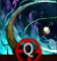
抛竿，取色红圈任意处
3-4秒延迟
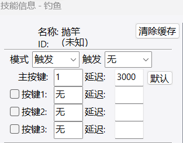
或者使用
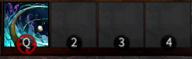
技能4灰=抛竿
避免因为延迟不够，导致打断抛竿动作。
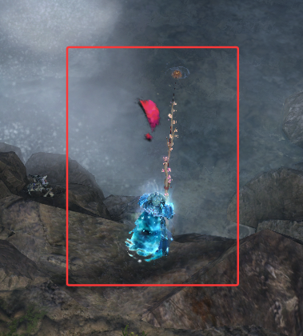
收杆，范围取色，取色感叹号，表示区域内有感叹号的颜色，执行收杆动作。
范围根据你电脑自己框选，如图所示
框选范围后，点击仅保存，在进行取色
颜色可以手动填入0xF4357C，具体以你本地电脑为准
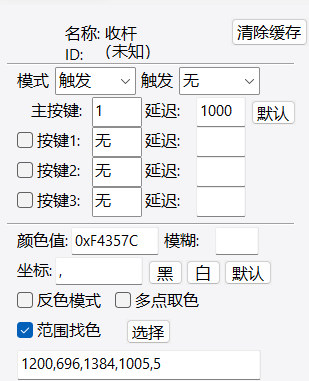
如果取色太快，可以勾选动态取色，然后点击取色，感叹号出现的时候，对着感叹号按下f9。
不会冻结画面。
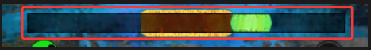
绿条，取色 图中来回滑动的那个绿色方块。
框选范围后，点击仅保存，在进行取色
或者直接填 0x9CF373
范围选择钓鱼的ui长条区域。
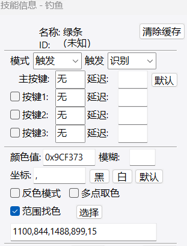
注意，鼠模式要改成识别，不需要设置按键，默认为左2，右3.
黄条，取色 图中黄色方块 顶底 细长条黄色，或者中心土黄色，任意区域。
框选范围后，点击仅保存，在进行取色
直接填 0xFFDB52，以你本机为准。
范围与上面一样，可以直接粘贴上面的区域范围。
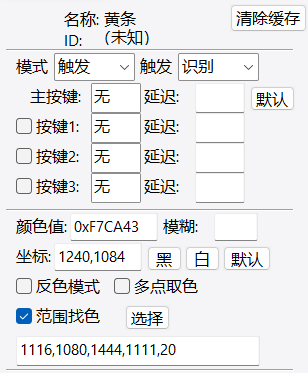
注意，鼠模式要改成识别
在循环结尾，加上对比判断，用于判断绿条，黄条的Y轴坐标，用于自行按下2,3热键，进行移动。
绿条@黄条
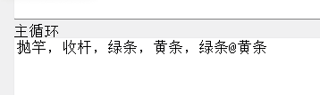
注意，绿条在前，换条在后
评论列表（39）
大佬，这个收杆怎么换个地方亮度不一样就不会自己收了怎么办
@q1142894980 收杆是取图标1的下面红色圆圈，可以加点模糊度，或者加反色技能4
试了好多次取色就是不收杆，要是能大范围识别就好了，抛竿和自动左右没有问题很完美
@lbmzxhbb@gmail.com 收杆的条件是 范围找色框选 人物周围一圈，然后取色感叹号，你钓鱼的时候固定视角确保感叹号处于范围找色区域内就行。
@melis 确实在感叹号范围内，甚至我把范围扩展到中间整个屏幕，仅保存后取色感叹号还是不行，红温了🤡
@lbmzxhbb@gmail.com 取色要加模糊度，模糊度改成5-15，肯定能触发
@melis 改了模糊度还是不能检测到感叹号，只能手动了
@lbmzxhbb@gmail.com 你是不是改错位置了，范围找色的模糊度，是改范围取色结尾后面的数字，不是颜色后面的那个
@melis 大佬，为了方便测试我收杆部分检测区域和取色直接选了这个怪的血条来判断是否收杆，在我抛竿之后点击这个怪，上面出现了血条，按理说应该触发1收杆对吧，但依旧不收杆，没有任何反应，模糊度5，10，15我都试过也不行，我感觉是bug，或者系统问题？因为区域取色的自动左右是没问题的，延迟部分我自己改的不用在意，500也不行，不知道大佬有没有解决办法。
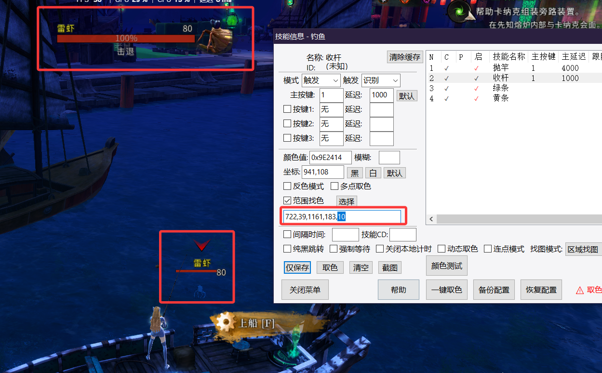
@melis 我是笨比，原来是因为这个，所以我搞这么长时间是因为第一次用的时候不知道打开了这玩意，服了哈哈哈
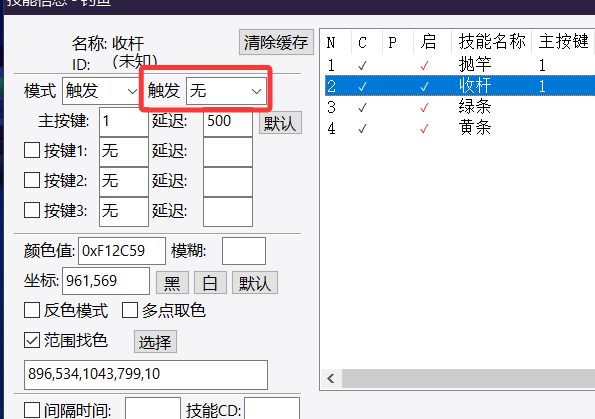
设置了，取色了，但是启动后不执行
@小弟 建议自己排查，能触发抛竿 跟拉回就说明有用，范围取色自己选钓鱼区域
没有下载链接，在哪下了
@大雕 主页右边
完全不会左右动呀。范围设了，识别开了，颜色填了
@AL 不自动加模糊度，或者自己取色，不要直接填颜色值，把技能 2，3 设置成 2，3 按键
@melis M佬，请问下我下了最新的软件，按照您这个取色，钓鱼不会左右动，您说的技能2，3设置2.3按键没看到，预设的里面只有抛竿，收杆，绿条，黄条
@KKax 简单来说，就是通过获取黄条，绿条的坐标，执行跟踪，并反向按左右，默认内置按键是2、3 不支持修改。
@melis M佬，没太看懂您说的，但是我和AI聊了下，他给我说大概率是别人二次修改、复制粘贴时不小心粘进去的，不是作者原版模板的设计，然后说原版作者写的 `2color=0xF5327F` 只给【绿条】用，黄条本来不应该加这个玫红色，删了技能信息中的2color=0xF5327F，再在绿条技能信息里面加了个0xF5327F。现在是会左右动了，但是遇到了黄框如果到了最左边后，会一直按2导致卡在边缘不动，我主动干预后就不再按了；第二个问题是追不上
@KKax 你需要自己框选你电脑上的钓鱼框区域，不用按照图片上的数字填写，如果卡住不动，可以添加5点模糊度，或者等晚些我出一个视频。
@melis 嗯，我看您和其他人回复了，我是自己取色和选的区域，模糊度加了5，还是会卡，我等您的视频好好学习下我哪个地方不对，感谢
大佬，我这鱼竿技能2，3是点按的，能改成长按吗？延迟22ms，其他都没问题
@星光 等后续优化
大佬，是自己新建个配置，自己写循环取色吗？还是有做好的循环，我取色就好了
@不落地的枫叶 懂了，能追，但是追不上- -，设置了DXGI或者WGC都不行额。
@不落地的枫叶 增加绿条，黄条模糊度
绿块纯左右动的时候黄条有点追不上绿条啊。被疯狂左右遛狗，大佬能优化下吗
@妙脆角 能跟踪就说明取色没问题，追不上说明你识别模式延迟过高，要换成dxgi或者wgc。
或者游戏里吃食物，+鱼饵
2,3是一下一下按得，咋能让他一直按啊
@针针针 换dxgi或者wgc模式，gdip延时慢导致 按键有延迟。
大佬 我这个要不一直往左 要不一直往右，那个黄条
@longly 换颜色，增加模糊度，都可以测试，不行换模式gdip
大佬 我这个要不一直往左 要不一直往右，那个黄条
能不能按键2 3 换成方向键？
@花舞无双 不行
只会往右不会往左是什么原因啊？
@L 给黄条加点模糊度 或者换一个其他黄色
按照步骤一步步来怎么就只会抛竿，其他的都没反应
@1 跟技能一个原理，你预告能用这个就没问题。